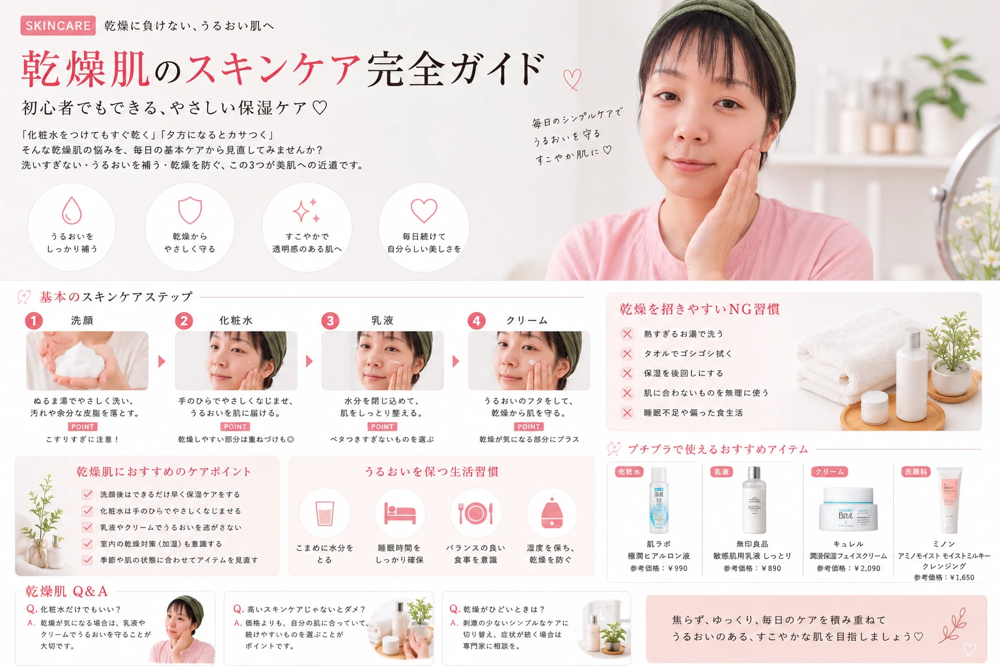

乾燥肌のスキンケア完全ガイド｜初心者でもできる保湿ケア
更新日：2026年8月
そんな乾燥肌の悩みを、毎日の基本ケアから見直してみませんか？
乾燥肌のスキンケアで大切なのは、 高価なアイテムをたくさん使うことではありません。
洗いすぎない・うるおいを補う・乾燥を防ぐ。 この基本を意識するだけでも、毎日のケアは変わってきます。
- 乾燥肌の基本的なスキンケア方法
- 化粧水・乳液・クリームの使う順番
- 乾燥しやすい人が見直したい習慣
- プチプラアイテムを選ぶときのポイント
- 朝と夜のケアの違い
乾燥肌のスキンケアで大切な3つの基本
乾燥が気になると、いろいろな美容アイテムを追加したくなります。 でも、まずは基本を整えることから始めましょう。
洗いすぎない
肌をゴシゴシこすらず、やさしく洗うことを意識します。
水分を補う
洗顔後はできるだけ時間を空けず、化粧水などでうるおいを補います。
うるおいを守る
乳液やクリームなどを使い、乾燥しにくい状態を目指します。
毎日続ける
特別なケアより、無理なく続けられる習慣を作ることが大切です。
乾燥肌の基本スキンケア順番
基本的には、洗顔後に水分を補い、その後に乳液やクリームなどで 肌を整えていきます。
洗顔
ぬるま湯を使い、肌をこすりすぎないようにやさしく洗います。
化粧水
手のひらでやさしくなじませます。強くパッティングする必要はありません。
乳液
化粧水の後に使い、肌をしっとり整えます。
クリーム
特に乾燥が気になる部分には、クリームをプラスするのもおすすめです。
乾燥肌は「たくさん塗ればOK」ではない
乾燥すると、化粧水や美容液を何種類も重ねたくなることがあります。
しかし、アイテムの数を増やすことよりも、 自分の肌に合ったシンプルなケアを続けること を意識しましょう。
「洗顔 → 化粧水 → 乳液」という基本から始め、 乾燥が気になる場合にクリームなどを追加していくと分かりやすいです。
乾燥肌向けアイテムの選び方
スキンケアアイテムを選ぶときは、価格だけでなく、 使用感や自分の肌との相性もチェックしましょう。
| アイテム | チェックしたいポイント |
|---|---|
| 化粧水 | しっとり感・使いやすさ・肌に合うか |
| 乳液 | ベタつきすぎないか・伸ばしやすいか |
| クリーム | 乾燥が気になる部分に使いやすいか |
| 洗顔料 | 洗い上がりがつっぱりすぎないか |
朝の乾燥肌スキンケア
朝は、その後にメイクや紫外線対策をすることを考えて、 重ねすぎないケアを意識すると使いやすくなります。
- 肌の状態に合わせて洗顔する
- 化粧水でうるおいを補う
- 乳液などで肌を整える
- 日中は紫外線対策も忘れない
夜の乾燥肌スキンケア
夜は一日の汚れやメイクを落とした後、 肌をやさしく整えることを意識します。
- メイクをしている場合はきちんと落とす
- 洗顔時に肌をこすりすぎない
- 洗顔後は保湿ケアを行う
- 特に乾燥する部分はクリームなどでケアする
乾燥を招きやすいNG習慣
NG 01｜熱すぎるお湯で洗う
熱すぎるお湯は肌への負担になりやすいため、 洗顔ではぬるま湯を意識しましょう。
NG 02｜タオルでゴシゴシ拭く
洗顔後はタオルを肌に強くこすりつけず、 やさしく水分を取るようにします。
NG 03｜保湿を後回しにする
洗顔後に長時間そのままにせず、 できるだけ早めにスキンケアを行いましょう。
NG 04｜肌に合わないものを無理に使う
人気の商品でも、自分の肌に合うとは限りません。 使用中に違和感がある場合は無理に使い続けないことも大切です。
乾燥肌のために見直したい生活習慣
スキンケアだけでなく、普段の生活も見直してみましょう。
- 部屋が乾燥しすぎないようにする
- 十分な睡眠時間を確保する
- 偏りすぎない食生活を意識する
- 肌を必要以上に触らない
- 季節に合わせて保湿ケアを調整する
乾燥肌Q&A
まずは「3つのケア」から始めよう
乾燥肌のケアは、難しく考えすぎなくても大丈夫です。
① 洗いすぎない
② うるおいを補う
③ 乾燥を防ぐ
まずはこの3つを毎日の習慣にしてみましょう。
少ない予算でも、肌ケアはできる。
Pro Pocket Beautyでは、 プチプラで始めやすい美容・スキンケア情報を 初心者にも分かりやすく紹介しています。